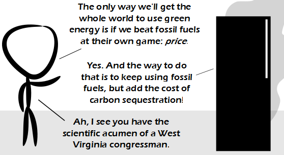

Comic JK 763
When I Feel Like It
⇤
<
?
>
⇥

⇤
<
?
>
⇥
Forum
.
RSS
.
Digg
.
Facebook
.
Reddit
.
Twitter
.
Stumbleupon
Enter your thoughts on number 763 here. Please, no spamming, trolling, phreaking, or selling tuna. Does this mean Carl Orff is banned ? after all, he composed O For Tuna... In my country the government is currently considering introducing a carbon tax, that from what little we've actually heard about it, will definitely not cause a reduction in carbon emissions; and instead will simply raise the prices of everything for end-consumers. This is particularly disconcerting for me, because my state uses very close to 100% green energy already, and yet we will still have to pay the tax as if we were using coal and oil power stations like the rest of the country. Really, the only thing here that has carbon emissions are vehicles such as cars, but whenever someone tries to reintroduce trains or trams, or tries to introduce alternate fuel vehicles (hydrogen, electric, etc) they get shot down by the environmental groups that we really wish actually cared about the environment at least once in their lives as opposed to just wanting to prevent future development. (tl;dr: My government sucks, and my state already uses green energy where we are allowed to) > Because it's so much more _fun_ for traders that way! > Australian? Me too. :( >> Yeah. Wish Julia could have kept her 'no carbon tax this term' election promise. There are better ways of being environmentally friendly. Ways that may actually work. >>> Shouldn't be a problem for much longer. Good bye carbon and mining taxes. Simple solution, spray paint all fossil fuels green! > +1 Seriously, what the hell is this shit?